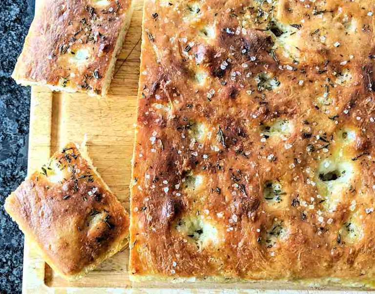

No Knead Focaccia

About the dish
This super easy no knead focaccia recipe will shock your friends.
With only a few ingredients, it's easy to make and tastes fantastic!
Ingredients
- 400g of flour
- 250ml of water
- 10g of yeast
- 30ml of high quality olive oil
- Rosemary
- Salt
Steps
- Mix yeast with 250ml of warm water. Add a tablespoon of flour. Let sit for 10 minutes
- Once your yeast has foamed, mix in with flour. Stir until combined.
Add a little olive oil to your hands to help with sticky dough
- Let dough sit for 30 minutes
- After 30 minutes, raise and fold the dough on itself four times, turning 90° each time
- Let rest for 30 minutes
- Repeat steps 4 and 5 three more times.
- Once the dough is ready, transfer to a well oiled baking tray
- Pour 30ml of olive oil on top. Stick fingers into the dough to create dimples
- Add rosemary
- Bake at 400° for 30 minutes or until golden brown
- Once finished, transfer to a wired rack, salt the focaccia and let cool